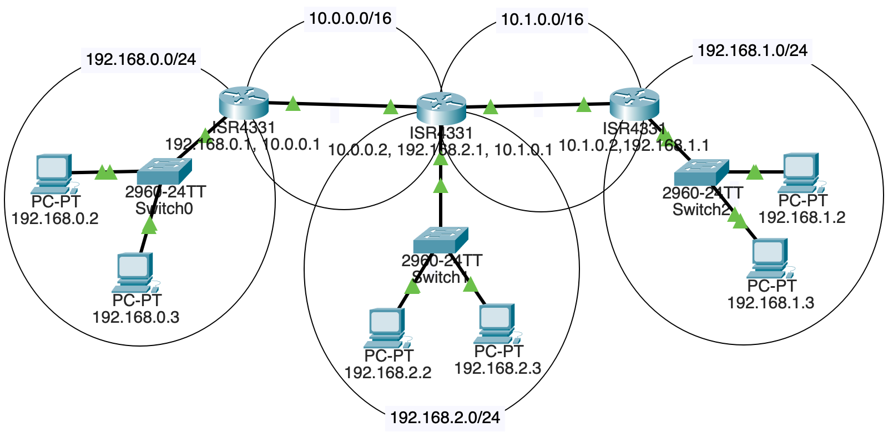
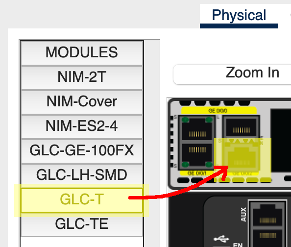

In the last Packet Tracer project, we had a single router between two subnets. In this project, we’ll have multiple routers between subnets.
This complicates matters, because each router’s routing table needs to be edited so that it knows out which connection to forward packets.
In a larger LAN, a gateway protocol could be used to quickly distribute the information the routers needed.
But in our case, to keep it conceptually simple, we’ll just manually configure the routes in each of the three routers we’ll have.
FIVE subnets!
192.168.0.0/24192.168.1.0/24192.168.2.0/2410.0.0.0/1610.1.0.0/16And here’s a picture of it:

We’ll need:
Each LAN is connected to one router.
Two of the routers also connect to another router.
But, and this is the fun bit, the middle router is connected to two routers and another LAN!
Put straight-through copper connections between the components as shown in the diagram, above.
That router in the middle that connects to two other routers and a LAN? It doesn’t come with enough ports by default. We need to add one.
Luckily this is a virtual simulation, so you’re allowed to simulate virtual payment for the new components and won’t have to open your real wallet.
Select that router and go to the “Physical” tab.
Click “Zoom In” to get a better view.
The power switch is on the right side. Scroll over there and click it. (You can’t add components until you power it down.)
Two of the Ethernet connectors are in the upper left. Just right of those, there are two more ports that we can plug components into.
From the left sidebar, drag a “GLC-T” into the lower one of those ports (apparently it doesn’t work in the upper one), as shown below:

Then power the router back on.
Use these subnet numbers:
192.168.0.0/24192.168.1.0/24192.168.2.0/24By convention, routers often are the .1 on their subnet, e.g. 192.168.2.1. This isn’t a requirement.
Assign the 2 PCs and 1 of the routers IP addresses on the subnet. Connect them all to a switch.
Make sure the correct Ethernet port on the router has been set “On” in its config!
Sanity check: all computers on a subnet should be able to ping each other and their router.
Remember that when PCs send out traffic, they either know they’re sending it on the LAN (because the destination is on the same LAN), or they don’t know where the IP is. If they don’t recognize the IP as being on the same subnet, they send the traffic to their default gateway, i.e. the router that knows what to do with it.
Click on each PC in turn. Under “Config” in sidebar “Global/Settings”, set a static “Default Gateway” of that LAN’s router IP.
For example, if I’m on PC 192.168.1.2 and my router on that LAN is 192.168.1.1, I’ll set the PC’s default gateway to 192.168.1.1.
In fact, I’ll set the default gateway for all the PCs on the LAN to that value.
Do the same for the other two LANs.
In order to route properly, we need one subnet between the left and middle router, and another between the middle and right.
Use these subnets:
10.0.0.0/1610.1.0.0/16This means the left and right routers will have TWO IP addresses because they’re attached to two subnets.
But the middle router will have THREE IP addresses because it’s attached to three subnets! (i.e. attached to one LAN, and attached to two other routers.
Connect the subnets with copper straight-through connectors if you haven’t done so already..
We’re almost there, but if you’re on 192.168.0.2 and you try to ping 192.168.1.2, the traffic won’t get through.
This is because the router on subnet 192.168.0.0/24 doesn’t know where to send so that it arrives at 192.168.1.2.
We have to put that in.
We’re going to manually add “static routes” to each of the routers so that they know where to send things. As mentioned earlier, in real-life LANs, it would be more common to use gateway protocols to automatically get these routing tables set up.
But this is a lab–what would the fun be in that? (Actually it would be a very useful exercise, but this one is usefuller as an introduction.)
Let’s look at the network diagram again:
If a packet destined for 192.168.1.2 (on the right) leaves from 192.168.0.3 on the left, how does it get there?
We can see it must travel through all three routers. But when it arrives at the first one at 192.168.0.1 (the router for the LAN), where does that router send it?
Well, from there, we’ll head out on the 10.0.0.0/16 subnet to router 10.0.0.2.
So we have to add a route for the leftmost router saying, “Hey, if you get anything for subnet 192.168.0.0/24, forward it to 10.0.0.2 because that’s the next hop on the way.”
We do this by clicking on the leftmost router, then going to “Config”, and “Routing/Static” in the left sidebar.
The “Network” and “Mask” fields are the destination, and “Next Hop” is the router we should forward that traffic to.
In the case of the diagram, we’d add a route to the leftmost router like so (recalling that a \24 network has netmask 255.255.255.0):
Network: 192.168.1.0
Mask: 255.255.255.0
Next Hop: 10.0.0.2And that gets us partway there! But, sadly and importantly, that middle router doesn’t know where to send traffic for 192.168.1.0/24, either.
So we have to add a route to that middle router that sends it on the next hop, but this time out its 10.1.0.0/16 interface:
Network: 192.168.1.0
Mask: 255.255.255.0
Next Hop: 10.1.0.2And now we’re there! The router with IP 10.1.0.2 has an interface that is connected to 192.168.1.0/24. Our original packet is going to 192.168.1.2, and that’s on the same subnet! The router knows it can just send the traffic out on that interface.
Of course, that’s not all we have to do.
Add routing table entries for all the non-directly-connected subnets to each router.
Each router should have two static routing table entries so that all inbound and outbound traffic is covered.
If it’s all configured correctly, you should be able to ping any PC from any other PC! The routers forward the traffic to the other LANs!